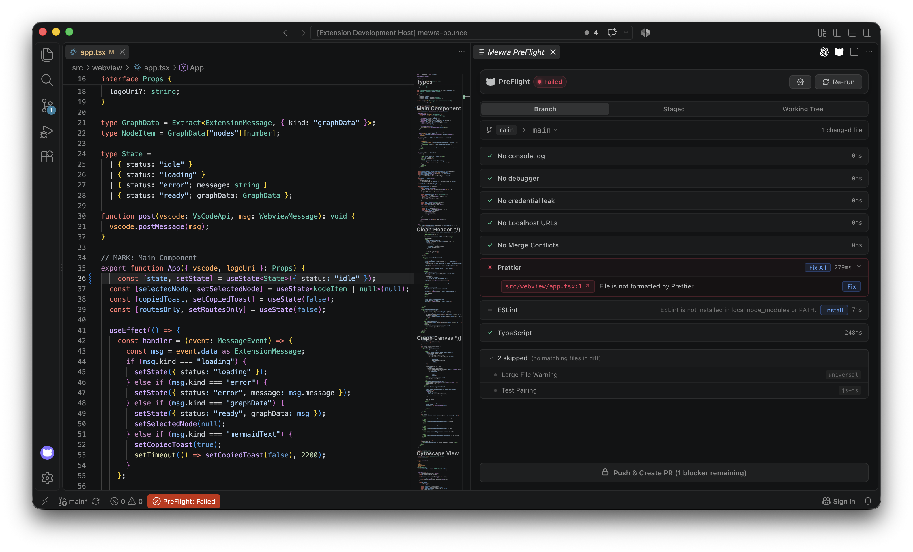

Catch regressions in your diff, not in CI or production.
Mewra PreFlight is the pre-push control tower for VS Code. It runs diff-scoped linters, formatters, type-checkers, secret scans, and manual checklists across your stack — unlocking a one-click PR launch only when your changes are clean.
The In-Editor Control Tower
Real VS Code Extension Development Host execution — click tabs to see each pipeline state.

Blockers Caught Early with Clickable Findings & One-Click QuickFix
PreFlight detects that app.tsx is unformatted. A single click on 'Fix' repairs the file. Missing tools (ESLint) degrade gracefully to 'not-configured' with an Install button instead of crashing.
Why In-Editor Diff Sanity Beats Pre-Push Git Hooks
Traditional pre-push hooks are friction-heavy terminal scripts. PreFlight gives you instant, visual feedback before you push.
-
❌
Runs too late: Triggers only after typing
git pushin your shell, jarring you out of your workflow. -
❌
Terminal wall of text: Unclickable file paths and lines with zero inline quick-fixes.
-
❌
Fragile scripts: If a teammate doesn't have a binary installed globally, the hook crashes their push entirely.
-
❌
Slow entire-repo scans: Often re-checks untouched code, dragging push latency to 30+ seconds.
-
❌
Bypassed with
--no-verify: Developers get frustrated and skip verification altogether.
-
✅
In-editor on demand: Trigger with
Alt+Shift+Pwhenever you're ready to review your progress. -
✅
Direct file:line navigation: Click any finding to open the exact file and line in your active editor.
-
✅
Bring Your Own Tool (BYOT): Resolves
node_modules,.venv, orvendor. Missing tools shownot-configuredwith an Install button. -
✅
Strictly diff-scoped: Only analyzes modified lines against
main, finishing in milliseconds (1ms–400ms). -
✅
One-click PR Launcher: Pushes your branch and drafts a structured PR description on GitHub or GitLab automatically.
Polyglot Ecosystem Packs
Zero configuration required. PreFlight detects active languages and runs project-local tooling.
| Prettier | prettier --check |
| ESLint | eslint --format json |
| TypeScript | tsc --noEmit (diff-filtered) |
| Test Pairing | *.ts ➔ *.test.ts |
| Ruff / Black | ruff format / black |
| Ruff / Flake8 | ruff check / flake8 |
| MyPy | mypy <diff-files> |
| Test Pairing | <mod>.py ➔ test_<mod>.py |
| gofmt | gofmt -l <diff-files> |
| go vet | go vet ./... (packages) |
| golangci-lint | golangci-lint run |
| Test Pairing | *.go ➔ *_test.go |
| PHP-CS-Fixer | php-cs-fixer --dry-run |
| PHPStan / Psalm | phpstan analyse |
| Test Pairing | Class.php ➔ ClassTest.php |
| Composer | vendor/bin resolution |
Language-Agnostic Guardrails & Custom Checks
Common developer pitfalls caught automatically over added diff lines only.
Universal Secret & Leak Guard
Scans only newly added git diff lines for accidentally staged
credentials, OpenAI/AWS tokens, private keys, or
.env file content before it reaches your repository.
Clean Code Sanity Checks
Catch stray debugging leftovers before code review:
console.log, debugger,
print(), dd(), var_dump(),
hardcoded localhost:* URLs, and unresolved merge
markers.
File-Triggered Manual Checklists
Define team verification items that only appear when relevant
files are touched. Did you touch
prisma/migrations/**? PreFlight automatically
displays: "Applied DB migration to dev cluster".
Native Model Context Protocol (MCP) Server
PreFlight exposes a native VS Code MCP server. AI coding agents running in your editor can inspect pipeline diagnostics, run verification loops, and confirm code cleanliness without terminal scraping.
Exposes strictly scoped tools: get_preflight_status,
get_check_findings, run_check, and
mark_manual_check. Arbitrary shell execution is
completely locked down.
// AI Agent calls PreFlight MCP Server
const status = await mcp.get_preflight_status();
if (!status.isClean) {
const findings = await mcp.get_check_findings("prettier");
// Agent fixes src/webview/app.tsx:1
await editor.applyEdit(findings);
// Re-verify immediately
const result = await mcp.run_check("prettier");
// result: { status: "pass", findings: [] }
}Mewra Suite Synergy & Roadmap
PreFlight acts as the host for first-party companion extensions and upcoming releases.
| Version | Status | Scope & Companion Integrations |
|---|---|---|
| v0.1.0 | Current | Diff-scoped Host & Built-in Packs: Universal guardrails, Polyglot packs (JS/TS, Python, Go, PHP), Community JSON packs, Interactive manual checklists, Native Model Context Protocol (MCP) server. |
| v0.2.0 | Planned |
Mewra Pounce
Integration: Surface blast radius & impacted API routes directly in the
PreFlight dashboard; auto-attach Mermaid reverse call
hierarchy diagrams to PR drafts;
.preflightignore file support.
|
| v0.3.0 | Planned | First-Party Contributed Packs: Mewra Dependency Guard (OSV/Trivy lockfile CVE scans), ORM Cost Sentry (N+1 query & unindexed migration alerts), Mewra Style Guardian (AST token & Tailwind conflict checks), Local trend & history tracking. |
| v1.0.0 | Future |
Mewra Drift & Git Hooks: API contract drift
detection (OpenAPI vs implementation), automated one-click
.git/hooks/pre-push headless CLI installer, first
official production-stable release across VS Code Marketplace
and Open VSX.
|
Keep your git history clean.
Install Mewra PreFlight in VS Code today and never push broken code or forgotten console.logs again.